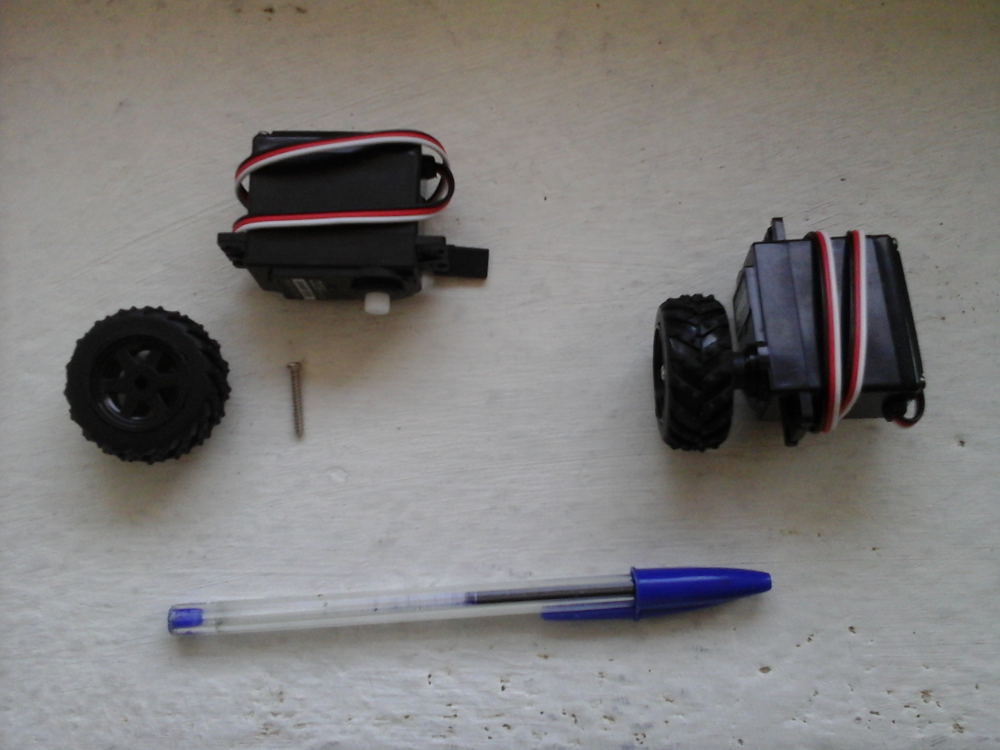
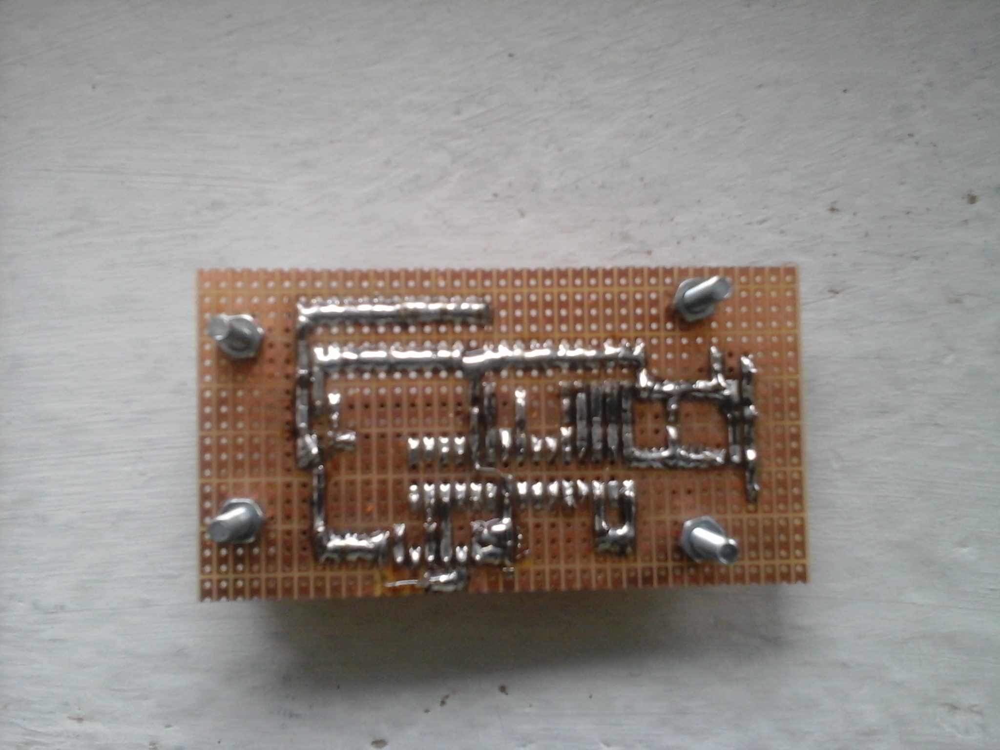

Explorer
{kind=link}
Le robot Explorer, comme son nom l'indique, doit pouvoir se déplacer de façon autonome dans un lieu inconnu pour en explorer tous les recoins.
Le but de ce robot est de créer une intelligence artificielle capable de diriger correctement le robot en misant tout sur un unique capteur de distance.
Caractéristiques techniques
- Mesure de la distance par un unique capteur à ultrasons placé à l'avant (portée jusqu'à 4m, précision 1cm).
- Contrôle autonome du robot par un puissant microcontrôleur (64MHz/16MIPS).
- Interface de communication entre le PC et le robot simple et efficace (notamment pour mettre rapidement à jour le firmware).
- Châssis blindé résistant aux inévitables chocs avec les obstacles.
- Moteurs au couple énorme (3.5 Kg/cm) pour que le robot puisse se débloquer de la plupart des situations.
- Alimentation surdimensionnée (8 accus NiMH de 2500mAh) capable de fournir suffisamment d'énergie aux moteurs pendant longtemps.
Mécanique
Le châssis du robot est fortement inspiré de celui du projet Odyssey. Il est composé de deux plaques métalliques superposées maintenues par des boulons. Deux servomoteurs à rotation continue de type S04NF sont fixés au châssis à l'aide de cornières d'aluminium prévues à cet effet, un fixation bien plus simple que celle employée sur Odyssey.
Une bille en acier boulonnée sur le châssis sert de roue folle et assure une suspension particulièrement souple à l'ensemble...
La construction du robot est détaillée dans les photos ci-après. L'échelle des pièces est donnée par un stylo Bic présent dans certaines photos.
Tout commence par deux plaques d'acier galvanisé de 20 x 9cm et de 2mm d'épaisseur.
{kind=link}
Une des plaques va constituer la partie inférieure du châssis. Elle est percée aux dimensions des cornières des servomoteurs qui sont ensuite boulonnées dessus.
{kind=link}
Voici l'autre côté de ce début de châssis.
{kind=link}
Vient ensuite la roue folle...
{kind=link}
...puis les boulons qui accueilleront la partie supérieure du châssis.
{kind=link}
Les servomoteurs à rotation continue...
{kind=link}
...peuvent alors être montés dans les cornières.
{kind=link}
Il est temps de monter le régulateur de tension muni de sa connectique.
Le régulateur est monté directement sur le châssis pour s'en servir comme d'un dissipateur thermique, ce qui évite de recourir à un radiateur.
La partie inférieure du châssis est prête à accueillir le circuit imprimé.
{kind=link}
On peut maintenant s'occuper de la partie supérieure du châssis. Il faut commencer par percer les trous nécessaires aux composants montés en façade (led, interrupteur et connectique série), puis les boulonner.
Les boulons chargés de maintenir le pack d'accus sont eux-aussi mis en place.
{kind=link}
Le coupleur de piles est alors soudé sur un bout de plaque de cuivre car les câbles de ces coupleurs sont toujours de piètre qualité et se coupent rapidement. Il n'est ainsi pas nécessaire de démonter le châssis pour ressouder le coupleur lorsqu'il se casse.
{kind=link}
La connectique avec le circuit imprimée est alors soudée sur les composants de la plaque supérieure.
La partie supérieure est elle aussi achevée.
{kind=link}
Le châssis est terminé. Il ne reste plus qu'à assembler les deux parties.
Passons maintenant à l'électronique du robot.
Electronique
Le circuit électronique est réduit au strict minimum. L'alimentation fournie par 8 accumulateurs NiMH de 2500mAh (ou 8 piles AA standards) est régulée par un LM1085, un régulateur linéaire LDO de très bonne facture.
La tension de la batterie est ramenée via un pont diviseur sur une entrée analogique du microcontrôleur pour que ce dernier puisse la mesurer.
Un microcontrôleur PIC18F26K22 s'occupe de récupérer la sortie du capteur de distance et d'activer les moteurs en conséquence.
Ce microcontrôleur a été choisi pour de nombreuses raisons :
- La taille importante de ses mémoires (64Ko de flash et presque 4Ko de RAM, ce qui est énorme pour un PIC).
- Ses nombreux timers (au nombre de 6, dont 3 sont sur 16 bits).
- L'architecture PIC18 permettant d'avoir des interruptions de haute priorité très rapides (nécessaires pour le capteur de distance).
- L'oscillateur haute précision intégré cadencé jusqu'à 64MHz (16 MIPS).
- Le multiplieur hardware disponible dans l'architecture PIC18.
Voici le schéma très simple de l'électronique du robot. Il a été réalisé avec CadSoft Eagle 7.5.0.
Les fichiers source sont disponibles sur GitHub, tout comme les codes sources des programmes.

J'ai choisi d'utiliser un capteur de distance SR-04 pour voir ce qu'il avait dans le ventre.
Je peux maintenant affirmer qu'il fonctionne très bien, avec une bonne portée (3m) et une grande précision.
La mise en œuvre du capteur est assez simple si l'on dispose d'un microcontrôleur rapide.
- Envoyer une impulsion d'au moins 10µs sur le pin TRIGGER.
- Le capteur va alors envoyer plusieurs salves d'ultrasons et mesurer le temps qu'elles mettent à revenir.
- Le capteur va répondre en passant son pin ECHO à l'état haut pendant un certain nombre de microsecondes correspondant à la distance mesurée avec l'objet le plus proche.
Il faut compter précisément le nombre de microsecondes puis le diviser par 58 pour obtenir une distance en centimètres.
La datasheet du capteur précise que la mesure la plus longue (c'est-à-dire qu'il n'y a aucun objet devant le capteur) dure 38ms.
C'est là que l'on voit tout l'intêret de prendre un PIC18 et de réserver les interruptions de haute priorité au capteur de distance.
Le circuit a été réalisé sur une plaque d'essai pour plus de facilité, mais le projet Eagle contient aussi un circuit routé et tous les gerbers nécessaires à sa réalisation.
Voici le circuit vu de dessus :
{kind=link}
Et le circuit vu de dessous.
{kind=link}
Enfin, voici une photo du circuit monté sur le châssis.
{kind=link}
Pour terminer cette section, quelques photos du robot assemblé.

{kind=link}
{kind=link}
Logiciel
L'IA du robot est gérée par le microcontrôleur PIC placé sur le circuit à un endroit peu accessible (on arrive à l'extirper et à le remettre avec un peu d'entraînement). Un des prérequis du logiciel embarqué était qu'il soit facilement modifiable sans devoir tout démonter. Pour cela, j'avais prévu une liaison série entre le PC et le microcontrôleur (la connectique 3 broches située à l'arrière du robot). Un programme PC développé pour l'occasion permet de se connecter au robot à l'aide d'un câble série FTDI pour lire la tension de la batterie, la distance renvoyée par le capteur et pour mettre à jour le firmware.
J'ai commencé par écrire un bootloader permettant de mettre à jour le firmware du robot. Ce bootloader se lance dès que le microcontrôleur est mis sous tension et attend une commande précise sur l'UART pour flasher un firmware. Si la commande n'est pas reçue avant 200ms, le bootloader charge le firmware et lui passe la main.
Si la bonne commande est reçue à temps, le bootloader passe en mode "mise à jour du firmware". Il reçoit ensuite les instructions du firmware depuis l'UART et les écrit dans la mémoire flash. Une fois que le firmware est complètement flashé, le bootloader reboote le microcontrôleur (l'architecture PIC18 dispose de instruction reset qui effectue un vrai reset software).
Le bootloader a permis de flasher le tout premier firmware, qui, comme la tradition l'exige, est le "hello world" de l'embarqué : faire clignoter la led.
Une fois le bootloader fonctionnel, j'ai pu m'attaquer au firmware. Il était maintenant aisé de le mettre à jour sur le robot.
Le firmware est composé de deux parties : la gestion des différents sous-systèmes et l'intelligence artificielle à proprement parler.
Les sous-systèmes sont au nombre de quatre :
- Gestion des moteurs (génération des signaux PWM)
- Mesure de la distance avec l'objet le plus proche
- Surveillance de la batterie
- Communication avec le PC via l'UART
Chaque sous-sytème tourne en tâche de fond à l'aide d'interruptions. Ainsi, le code de l'intelligence artificielle peut bloquer aussi longtemps qu'il le souhaite sans altérer les fonctions vitales du système.
Par mesure de sécurité, la tension de la batterie est mesurée toutes les secondes. Le robot se met en protection (il coupe tout) si la batterie est trop faible.
Après avoir mis en place tous les sous-systèmes, il devenait possible de coder une IA. La première IA de test est très basique :
- Le robot avance toujours tout droit.
- Si un obstacle est détecté à moins de 40cm, il tourne de 90° à droite et poursuit sa route.
- Si un obstacle est détecté à moins de 15cm, il recule un instant puis tourne à droite. Il reprend alors sa route en marche avant.
Cette IA donne des résultats assez efficaces lorsque la pièce est de taille convenable. Le robot a plus de mal dans une petite surface comme dans la vidéo ci-dessous.
Il se fraye un chemin en tapant dans les obstacles mais ne reste jamais coincé très longtemps.
L'inconvénient de cette IA est son déterminisme qui la rend lassante à la longue. Le robot effectue très souvent les mêmes parcours.
J'ai développé une seconde IA basée sur la précédente mais utilisant un peu d'aléatoire. Le robot choisit une direction au hasard lorsqu'il doit tourner plutôt que de toujours tourner à droite.
Il n'est cependant pas possible de choisir une direction aléatoire à chaque tournant car le robot risque de faire du surplace en changeant de direction à chaque obstacle.
Ce problème peut être évité en conservant la direction choisie pendant 4 secondes, un temps suffisamment long pour que le robot puisse effectuer un tournant à 270°, ce qui est suffisant la plupart du temps.
Voici cette IA en vidéo :
Retour au menu des projets
Page créée le 15/11/2015.